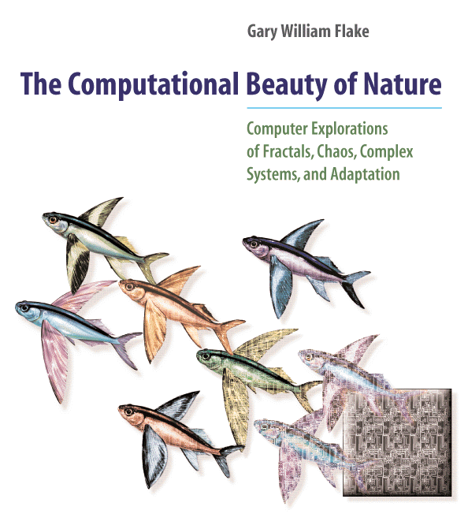
Gary William Flake · MIT Press, 1998
The Computational Beauty of Nature
Computer Explorations of Fractals, Chaos, Complex Systems, and Adaptation.
About the book · The programs · All 164 figures · Glossary · Source on GitHub · MIT Press
Live programs
Every program from the book that draws something, rewritten to run in the browser. Each one is a single file; the algorithm is the one in the book. Click through for the chapter it comes from.
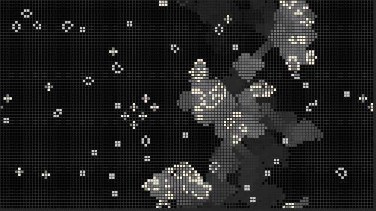
The Game of LifeChapter 15 · Cellular Automata
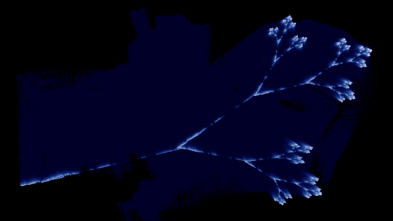
Iterated Function SystemsChapter 7 · Affine Transformation Fractals
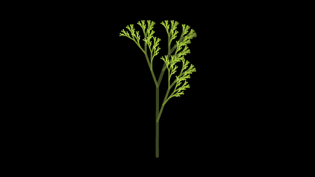
L-SystemsChapter 6 · L-Systems and Fractal Growth
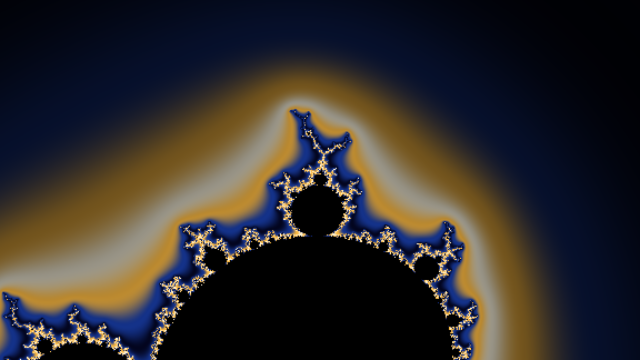
The Mandelbrot SetChapter 8 · The Mandelbrot Set and Julia Sets
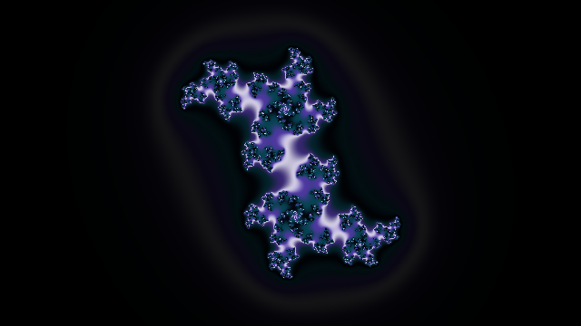
Julia SetsChapter 8 · The Mandelbrot Set and Julia Sets
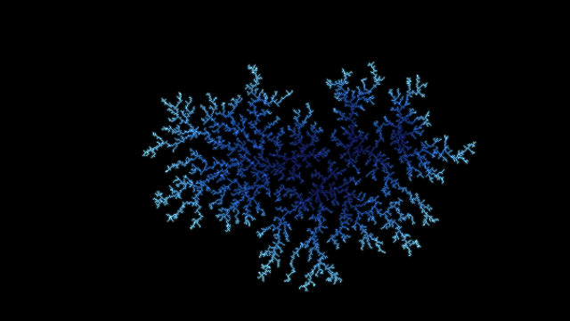
Diffusion-Limited AggregationChapter 5 · Self-Similarity and Fractal Geometry
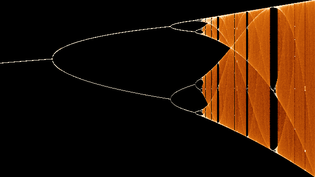
The Bifurcation DiagramChapter 10 · Nonlinear Dynamics in Simple Maps
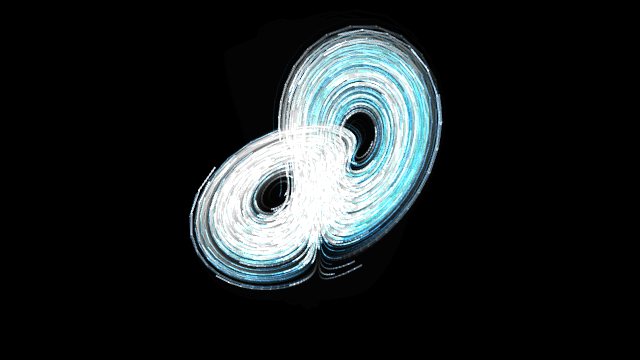
Strange AttractorsChapter 11 · Strange Attractors
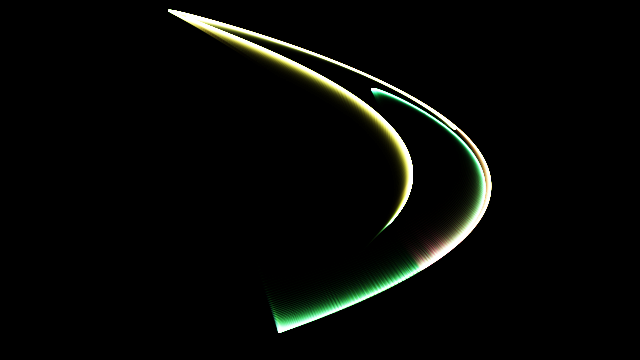
Stretching and FoldingChapter 11 · Strange Attractors
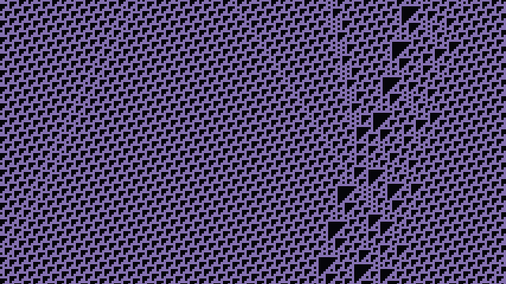
One-Dimensional Cellular AutomataChapter 15 · Cellular Automata
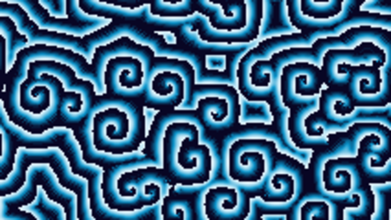
The Hodgepodge MachineChapter 15 · Cellular Automata
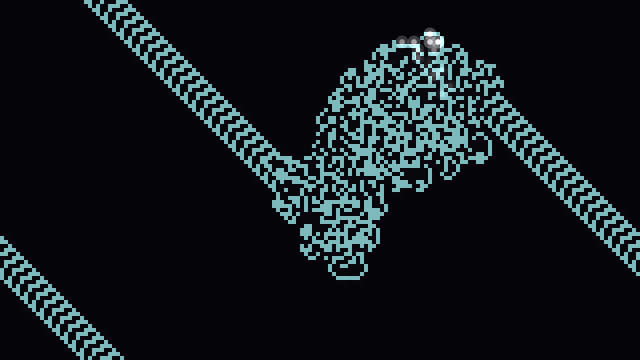
Virtual AntsChapter 16 · Autonomous Agents and Self-Organization
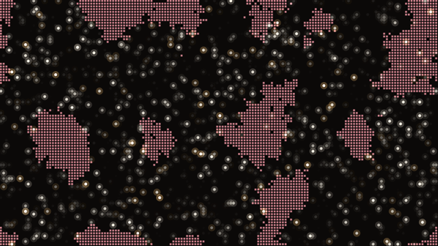
TermitesChapter 16 · Autonomous Agents and Self-Organization
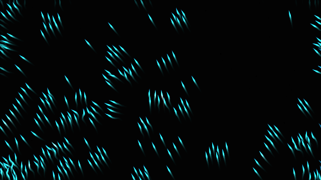
BoidsChapter 16 · Autonomous Agents and Self-Organization
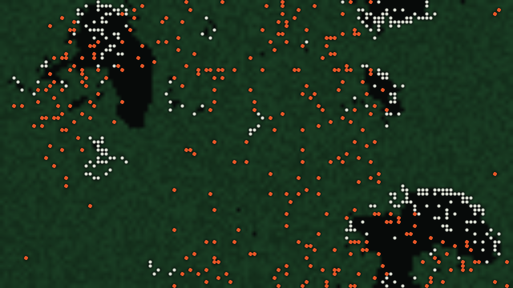
Grass, Sheep, and WolvesChapter 12 · Producer-Consumer Dynamics
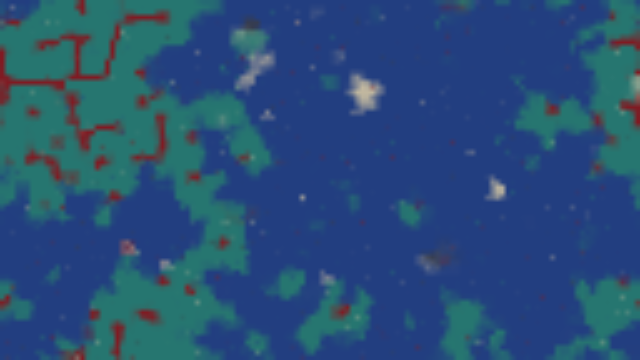
The Spatial Prisoner's DilemmaChapter 17 · Competition and Cooperation
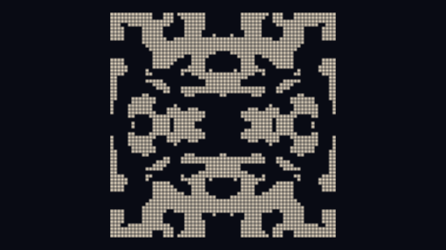
Associative MemoryChapter 18 · Natural and Analog Computation
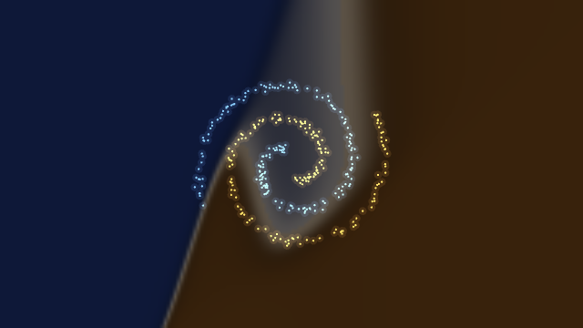
BackpropagationChapter 22 · Neural Networks and Learning